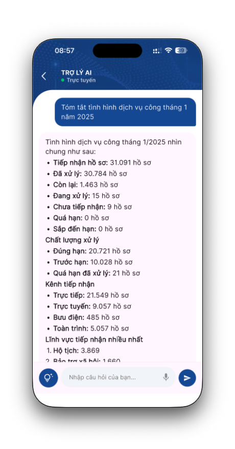
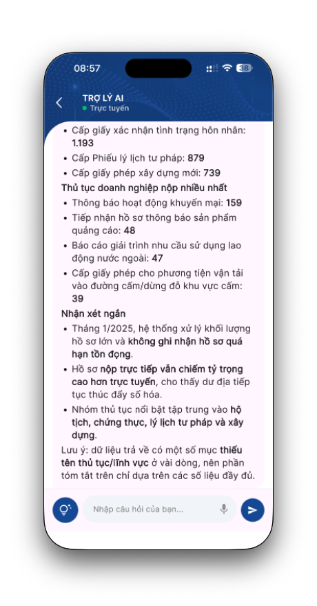
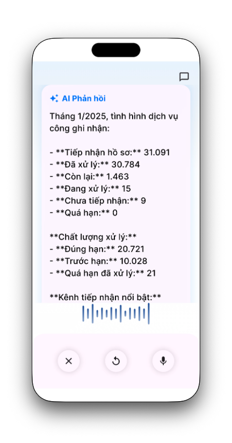
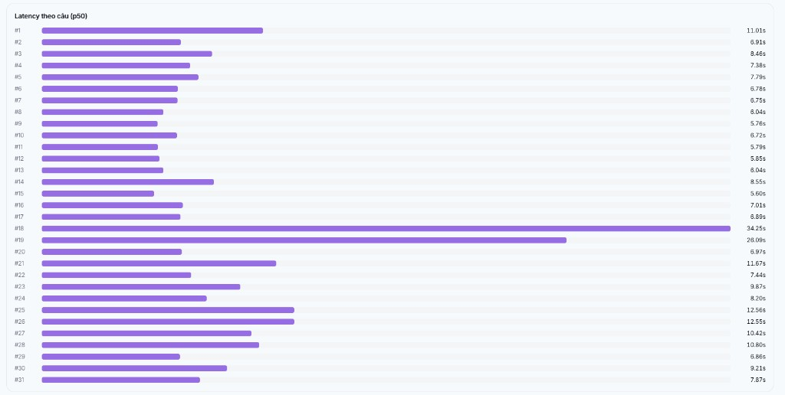

Báo cáo tổng quan · 08/07/2026
Báo cáo kết quả nghiên cứu — vấn đề người dùng, giải pháp tra cứu dashboard bằng AI, và đánh giá sẵn sàng triển khai.
Hệ thống không thiếu số liệu; vấn đề nằm ở cách người dùng phải điều hướng Dashboard để lấy câu trả lời
| Hiện trạng | Hệ quả |
|---|---|
| Phải nhớ dashboard, menu và tab chứa dữ liệu | Khó sử dụng với người ít thao tác hệ thống |
| Một câu hỏi cần nhiều bước: mở dashboard → chọn năm/tháng → đọc KPI & biểu đồ → tự tổng hợp | Mất thời gian khi cần báo cáo nhanh |
| Dashboard chỉ trả lời những gì đã được thiết kế sẵn | Không trả lời được câu hỏi phát sinh (so sánh, xu hướng, đơn vị cải thiện…) |
| Người dùng phải tự đọc và phân tích số liệu | Dễ bỏ sót thông tin, diễn giải không nhất quán |
Người dùng cần một cách khai thác dữ liệu theo đúng cách họ đặt câu hỏi, thay vì phải học cấu trúc Dashboard.
Người dùng chỉ cần nhập câu hỏi bằng ngôn ngữ tự nhiên.
Mỗi giải pháp có điểm mạnh riêng nhưng còn rào cản khi triển khai rộng
Ưu điểm: Dynamic — AI hiểu DB nên có thể sinh SQL phù hợp, không bị giới hạn theo tập query cố định.
Nhược điểm: Dễ bị hallucination; cần training để tránh sai lệch.
Ưu điểm: Có khả năng nhận định và phân tích.
Nhược điểm: Thời gian phản hồi lâu (~ 15–30s).
Ưu tiên tính ổn định và tốc độ khi trả lời theo “catalog truy vấn” đã được chuẩn hoá
Thời gian phản hồi ngắn: khai thác truy vấn đã cấu hình sẵn, giảm vòng suy luận.
Tỉ lệ chính xác cao: hạn chế sai lệch do “tự sinh SQL” (hallucination), kết quả bám vào dữ liệu dashboard.
Phụ thuộc vào SQL trên Lowcoder: chất lượng câu trả lời phụ thuộc tập truy vấn hiện có.
Phụ thuộc description trên trang admin: mô tả/domain càng chuẩn thì AI càng chọn đúng query để trả lời.
| Hiện tại | Sau AI Lookup Dashboard |
|---|---|
| Tự tìm Dashboard | Chỉ cần đặt câu hỏi |
| Tự chọn bộ lọc | AI tự xác định tham số |
| Đọc nhiều biểu đồ | AI tổng hợp thành câu trả lời |
| Chỉ xem dữ liệu đã thiết kế | Có thể hỏi linh hoạt theo nhu cầu |
| Mất vài phút tra cứu | Có kết quả trong vài giây |
AI Lookup Dashboard không thay thế Dashboard hiện có mà bổ sung một lớp tra cứu bằng ngôn ngữ tự nhiên — giúp người dùng khai thác dữ liệu nhanh hơn, ít thao tác hơn và phù hợp với cách đặt câu hỏi của người dùng.
Trách nhiệm từng tầng trong hệ thống
Cấu hình
Lưu + sync
Catalog mirror
MCP Server · Execute
Qua Orchestrator
Luồng cấu hình (ghi): Admin nhập mô tả, domain, gán MCP → Backend lưu lại → Backend đồng bộ sang bảng catalog trên MySQL/Postgres.
Nguồn query gốc: Lowcoder (MongoDB). Backend chỉ đọc khi đồng bộ, không phải lúc agent hỏi.
Luồng tra cứu (đọc): MCP server chỉ đọc bảng catalog đã mirror — không gọi lại Admin hay Backend.
“Tóm tắt ngắn gọn tổng quan dịch vụ công tháng 1 năm 2025”
Câu hỏi từ người dùng cuốiTháng 1/2025, dịch vụ công ghi nhận 31.091 hồ sơ tiếp nhận, trong đó 30.784 hồ sơ đã xử lý; 24.264 hồ sơ một phần, 1.463 hồ sơ còn lại, và chưa có hồ sơ quá hạn. Kênh tiếp nhận chủ yếu là trực tiếp (21.549), tiếp theo là trực tuyến (9.057) và bưu điện (485).
Một số điểm nổi bật:
Nếu cần, tôi có thể tóm tắt ngắn hơn nữa theo kiểu 1–2 câu.

Tóm tắt tình hình dịch vụ công tháng 1/2025 (1)
Tóm tắt tình hình dịch vụ công tháng 1/2025 (2)
Speech to text (3)Với model hiện tại đang sử dụng GPT-4o Mini, mỗi câu hỏi thường tốn chưa đến 10k token (input + output + tool calls).
Model: GPT-4o Mini — cân bằng giữa chất lượng suy luận và chi phí cho luồng agent đa bước (chọn sub-agent, MCP, tool).
Mức tiêu thụ: Một câu hỏi dashboard/báo cáo điển hình tiêu tốn chưa đến 10.000 token, bao gồm prompt hệ thống, lịch sử hội thoại ngắn và các vòng gọi tool MCP.
Quy đổi: Tương đương khoảng 40–80 VNĐ mỗi câu hỏi, tuỳ độ dài ngữ cảnh và số lần gọi tool trong phiên.
Giao động 5-10 giây cho một câu hỏi tra cứu dashboard điển hình — phần lớn thời gian nằm ở chuỗi quyết định của agent và các vòng gọi tool MCP.
Kết quả benchmark trên 31 câu hỏi mẫu - được đánh giá trên routing quality, result quality, avg time và run latency p50.

Sử dụng bộ SQL từ Lowcoder để training cho DB Sub-agent, nâng cao chất lượng câu trả lời và giảm thiểu tỉ lệ sai sót khi generate SQL
Cho phép một MCP server kết nối đồng thời nhiều CSDL thực thi, chỉ định rõ connection khi agent thực thi query.
Mở rộng khả năng thực thi truy vấn GraphQL bên cạnh SQL
Thảo luận & Q&A